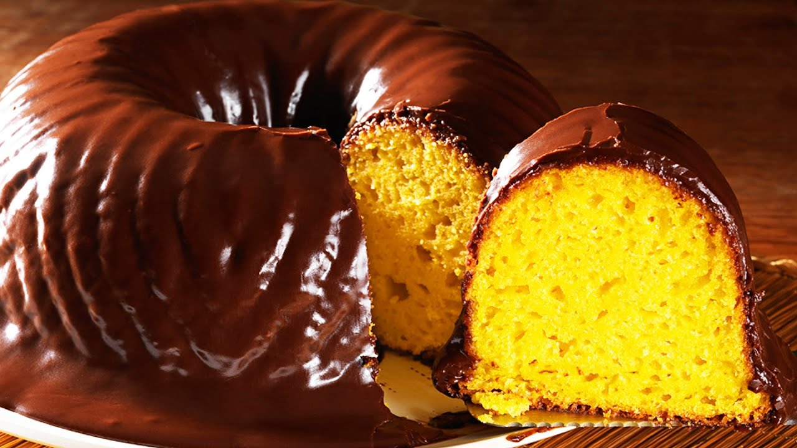

Receita: Bolo de Cenoura

Ingredientes:
- 3 cenouras médias
- 4 ovos
- 1/2 xícara (chá) de óleo
- 2 xícaras (chá) de açúcar
- 2 e 1/2 xícaras (chá) de farinha de trigo
- 1 colher (sopa) de fermento em pó
Massa:
- Retire a casca das cenouras, corte-as em pedaços, lave-as e cozinhe-as cobertas com água.
- Escorra a água, e deixe que as cenouras esfriem um pouco.
- Em um liquidificador, bata as cenouras cozidas, os ovos e o óleo.
- Despeje a mistura em um recipiente e misture o açúcar e a farinha de trigo peneirada com o fermento.
- Coloque em uma fôrma retangular (20 x 30 cm) untada, e leve ao forno médio (180°C), preaquecido, por 40 minutos.
- Enquanto isso, prepare a cobertura de brigadeiro.
Cobertura:
- Em uma panela coloque o Leite Condensado, o Chocolate em Pó e a manteiga e leve ao fogo baixo, mexendo sempre, até começar a desprender da panela.
- Despeje ainda quente sobre o bolo, distribua o chocolate granulado e deixe esfriar.
Saiba mais